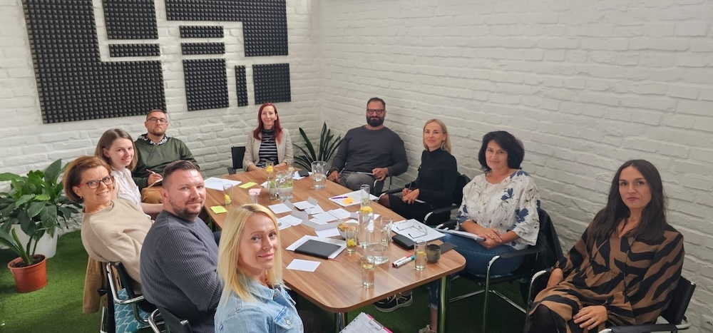

Keď to nevieme – platíme za to. Len to nevidíme na faktúre.
Dohodnime si call
Platíte za konflikty, ktoré nikto nerieši. Za rozhodnutia, ktoré čakajú na jedného človeka. Za nahradenie človeka, ktorý odíde. Za juniora, ktorého ste najali a platíte ako seniora – a zistíte to, až keď je príliš neskoro. Za potenciál, ktorý je v tíme – ale nikto ho nevidí.
Manažér, ktorý roky zastával rolu COO, sa ukázal ako prirodzený CCO. Program to pomenoval. Firma to urobila. Výsledky sú dnes niekde úplne inde než pred rokom.
Nesprávne obsadená seniorná pozícia odhalená skôr než stála firmu čas, energiu a peniaze.
Manažér výroby, ktorý tápal vo vedení ľudí, presunutý na rolu manažéra kvality – okamžitý rozdiel pre neho aj pre firmu.
Manažérka so silným talentom budovať vzťahy, presunutá z operatívnej role na Senior Key Account Manažérku – na pozícii, kde tento talent konečne dostal priestor.
Človek na administratívnej pozícii mal v sebe oveľa viac – dnes smeruje na HR manažérsku rolu.
Manažérka R&D, ktorá potrebovala viesť samostatne, rozhodovať a komunikovať v angličtine – za 9 mesiacov je tam.
9 ľudí. Jeden program. Zmenená organizačná štruktúra a firma aj ľudia na inom mieste než pred rokom.
Vedecky overená metodológia ktorá odhalí 34 prirodzených talentov človeka. Nie čo by mal robiť – ale čo mu ide prirodzene. Viac ako 30 miliónov ľudí po celom svete ju použilo na to, aby pochopili seba aj svojich ľudí lepšie. Využívajú ju organizácie vo viac ako 90 krajinách sveta – od globálnych korporácií po rýchlo rastúce firmy.
Dlhodobý rozvojový program pomenúva to, čo funguje, čo má potenciál, čo si firma mnohokrát možno ani neuvedomuje, že má.
A zároveň to, o čom sa len potichučky šepká, na čo sa nechceme pozerať. Čo bolí. Čo trvá. Čo sa odkladá – lebo operatíva je vždy silnejšia.
Práve preto to nie je jednorazový workshop. A práve preto to funguje.
"What happens if we invest in developing our people and they leave? What happens if we don't and they stay?"
– Peter Baeklund
AI možno zmení to, koľko ľudí firma potrebuje. Nezmení to, že títo ľudia musia vedieť kto sú – čo im ide, kde sú ich limity, ako fungujú.
AI je silná presne natoľko, nakoľko je silný človek za ňou. Zadá správny problém. Vyhodnotí správny výstup. Rozhodne sa správne. To nie je otázka nástrojov – je to otázka sebapoznania a schopnosti viesť ľudí.
Práve preto je práca s talentmi dôležitejšia než kedykoľvek predtým. Nie napriek AI – kvôli nej.
Za 40 minút zistíme, či to dáva zmysel – pre vás aj pre mňa.
Dohodnime si call